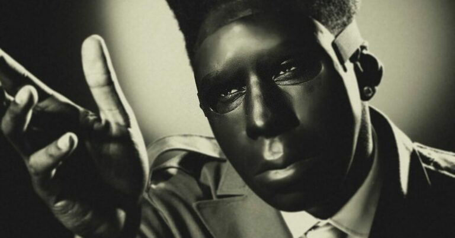

My preferred mediums:
- Watercolors
- Linocut Printmaking
- Woodcut Printmaking
- Oil Painting
- Pen & Ink
Since childhood I've loved to switch things up and explore new mediums in my art practice. One thing is certain though, I love to work with my hands and see how far I can push different media. I've always gravitated toward textures and pattern, part of the reason I fell in love with relief printmaking. And I lean toward watercolor because of the unique transparencies you can achieve.
Songs I'm Inspired by Right Now:
- St. Chroma feat. Daniel Caesar - Tyler, the Creator
- Loser - Beck
- DENIAL IS A RIVER - Doechii
- NUEVAYoL - Bad Bunny
- ROCKMAN - Mk.gee